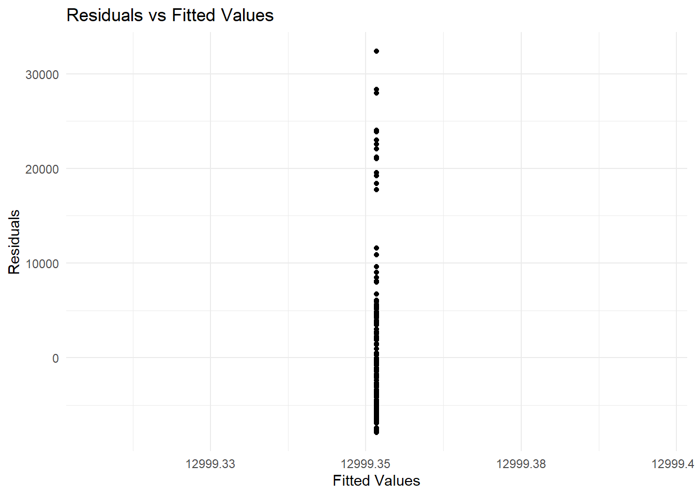

# Read the data from the CSV file
data <- readRDS("../Causal_Data_Science_Data/car_prices.rds")
# Check the dimensions of the data
print(dim(data))#> [1] 181 22akash.yadav <akash.yadav@tuhh.de>
1. Read the data and check the dimensions.
2. Use appropriate commands to get a more detailed look at the data. What data types do you see? How do numbers differ from strings regarding their data type?
#> aspiration doornumber carbody drivewheel
#> "character" "character" "character" "character"
#> enginelocation wheelbase carlength carwidth
#> "character" "numeric" "numeric" "numeric"
#> carheight curbweight enginetype cylindernumber
#> "numeric" "numeric" "character" "character"
#> enginesize fuelsystem boreratio stroke
#> "numeric" "character" "numeric" "numeric"
#> compressionratio horsepower peakrpm citympg
#> "numeric" "numeric" "numeric" "numeric"
#> highwaympg price
#> "numeric" "numeric"#> price enginesize horsepower
#> Min. : 5118 Min. : 61.0 Min. : 48.0
#> 1st Qu.: 7609 1st Qu.: 98.0 1st Qu.: 70.0
#> Median : 9980 Median :120.0 Median : 95.0
#> Mean :12999 Mean :127.1 Mean :106.2
#> 3rd Qu.:16430 3rd Qu.:141.0 3rd Qu.:116.0
#> Max. :45400 Max. :326.0 Max. :288.0# Summary of categorical variables
print(summary(data[,c("carbody", "doornumber", "fuelsystem", "enginetype")]))#> carbody doornumber fuelsystem enginetype
#> Length:181 Length:181 Length:181 Length:181
#> Class :character Class :character Class :character Class :character
#> Mode :character Mode :character Mode :character Mode :character# Correlation matrix of numerical variables
print(cor(data[,c("price", "enginesize", "carlength")]))#> price enginesize carlength
#> price 1.0000000 0.8897034 0.6730736
#> enginesize 0.8897034 1.0000000 0.6801707
#> carlength 0.6730736 0.6801707 1.0000000#>
#> 1bbl 2bbl mfi mpfi spdi spfi
#> 11 66 1 93 9 1#>
#> convertible hardtop hatchback sedan wagon
#> 6 7 65 81 22#>
#> four two
#> 98 83#>
#> dohc dohcv l ohc ohcf ohcv
#> 12 1 7 133 15 13#>
#> Call:
#> lm(formula = price ~ enginesize + doornumber + fuelsystem + enginetype,
#> data = data)
#>
#> Residuals:
#> Min 1Q Median 3Q Max
#> -9441.6 -1893.8 90.9 1421.0 12353.6
#>
#> Coefficients:
#> Estimate Std. Error t value Pr(>|t|)
#> (Intercept) -11322.05 1885.37 -6.005 1.15e-08 ***
#> enginesize 175.73 9.11 19.288 < 2e-16 ***
#> doornumbertwo 10.76 520.44 0.021 0.9835
#> fuelsystem2bbl -726.66 1101.46 -0.660 0.5103
#> fuelsystemmfi -4899.48 3542.15 -1.383 0.1684
#> fuelsystemmpfi 1784.38 1158.46 1.540 0.1254
#> fuelsystemspdi -1911.22 1531.76 -1.248 0.2139
#> fuelsystemspfi -313.56 3506.68 -0.089 0.9289
#> enginetypedohcv 5254.71 3515.72 1.495 0.1369
#> enginetypel 3729.50 1650.43 2.260 0.0251 *
#> enginetypeohc 1761.27 1086.42 1.621 0.1069
#> enginetypeohcf 2738.96 1344.52 2.037 0.0432 *
#> enginetypeohcv -3448.56 1444.80 -2.387 0.0181 *
#> ---
#> Signif. codes: 0 '***' 0.001 '**' 0.01 '*' 0.05 '.' 0.1 ' ' 1
#>
#> Residual standard error: 3347 on 168 degrees of freedom
#> Multiple R-squared: 0.8394, Adjusted R-squared: 0.8279
#> F-statistic: 73.17 on 12 and 168 DF, p-value: < 2.2e-16Choose one regressor and
explain what data type it is and what values it can take on
what effect it has on the price and what changing the value would have as a result
whether its effect is statistically significant.
Picking regressor as fuelsystemdohcv
The regressor fuelsystemdohcv is a categorical data type. This means that it can take on a limited number of values, such as “yes” or “no”. In this case, the values of fuelsystemdohcv are “yes” (for cars with dual overhead camshaft (dohc) engines) and “no” (for cars with other engine types).
Effect on price
The coefficient for fuelsystemdohcv is 5,254.71 euros. This means that cars with dohc engines can expect to be priced, on average, 5,254.71 euros more than cars with other engine types. This is a significant difference, and it suggests that dohc engines are a desirable feature for many car buyers.
Statistical significance
The coefficient for fuelsystemdohcv is statistically significant at the 0.001 level, which means that we can be very confident that the relationship between dohc engines and car price is not due to chance.
Overall, dohc engines are a significant predictor of car price. Cars with dohc engines tend to be more expensive than cars with other engine types.
Add a variable seat_heating to the data and assign a value TRUE for all observations. You can use e.g. df %>% mutate(new_variable = value) . Assign it to a new object and run a regression. What coefficient do you get for the new variable seat_heating and how can you explain it?
library("magrittr")
library("dplyr")
library("ggplot2")
data <- data %>% mutate(seat_heating = TRUE)
head(data)#>
#> Call:
#> lm(formula = price ~ seat_heating, data = data)
#>
#> Residuals:
#> Min 1Q Median 3Q Max
#> -7881 -5390 -3019 3431 32401
#>
#> Coefficients: (1 not defined because of singularities)
#> Estimate Std. Error t value Pr(>|t|)
#> (Intercept) 12999.4 599.7 21.68 <2e-16 ***
#> seat_heatingTRUE NA NA NA NA
#> ---
#> Signif. codes: 0 '***' 0.001 '**' 0.01 '*' 0.05 '.' 0.1 ' ' 1
#>
#> Residual standard error: 8068 on 180 degrees of freedomplot_model <- ggplot(model, aes(.fitted, .resid)) +
geom_point() +
geom_smooth(method = "loess", se = FALSE, color = "red", formula = y ~ x) +
labs(title = "Residuals vs Fitted Values",
x = "Fitted Values",
y = "Residuals") +
theme_minimal()
# Display the plots
print(plot_model)
adding a new variable
seat_heatingand assigning it the valueTRUEfor all observations. means seat_heating is the same for every single car in the dataset and when we include this constant variable in regression model, it collides with the intercept term. The intercept term is a constant that represents the expected value of the dependent variable when all the independent variables are zero. But here, seat_heating is also a constant, and this causes a problem which results inmulticollinearity, and more specifically perfect multicollinearity